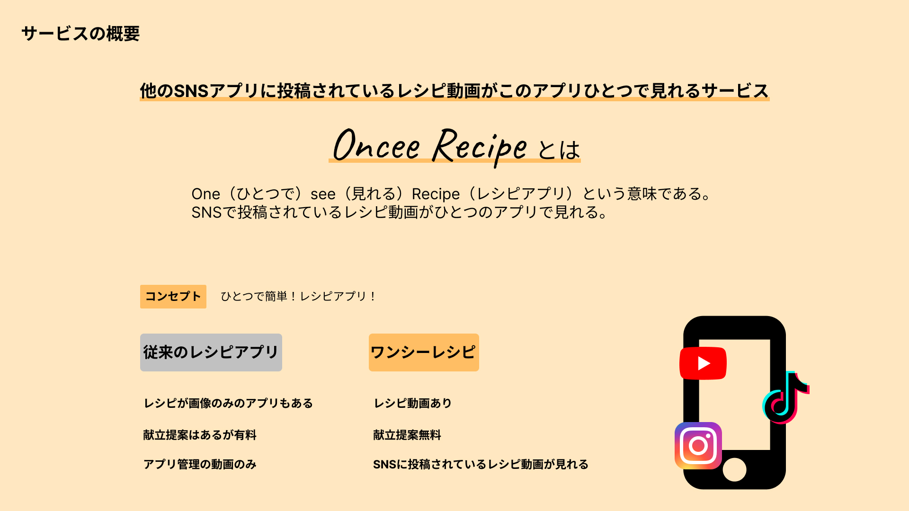
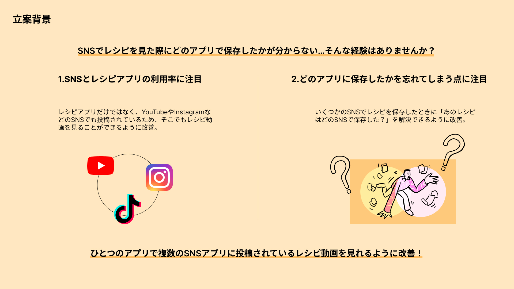
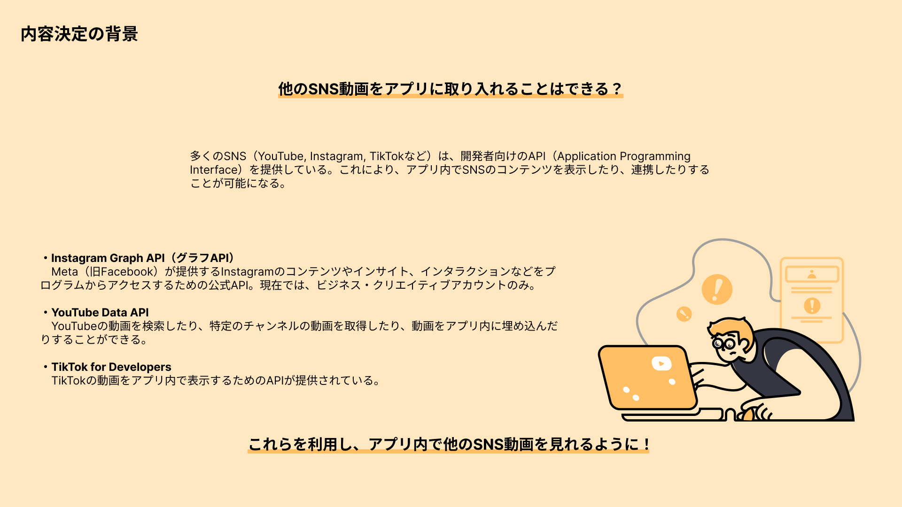
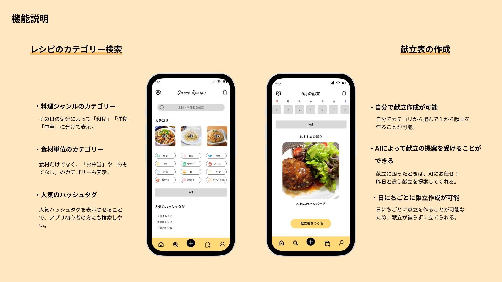
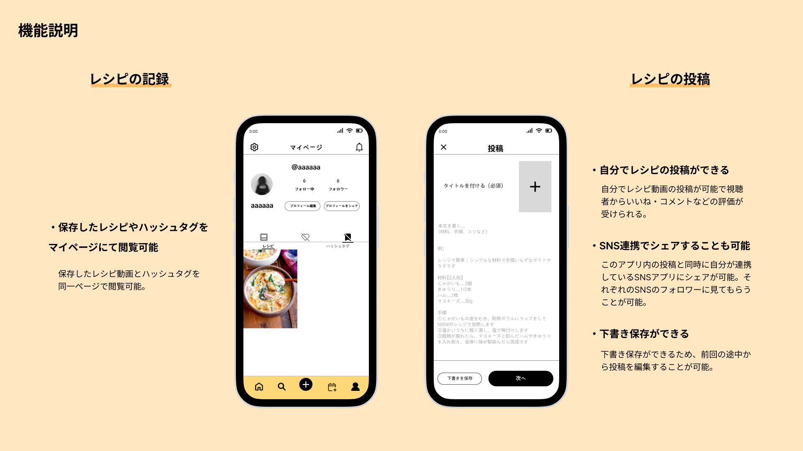
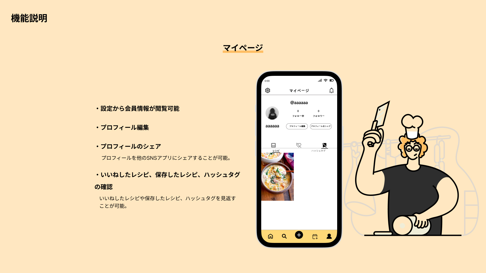
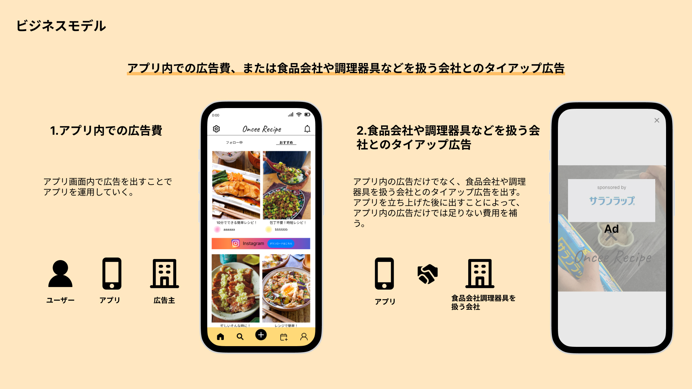
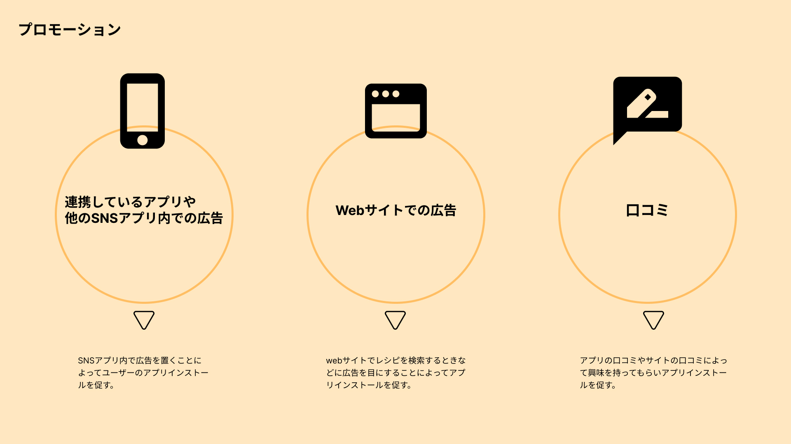

大学の授業内で新しいサービスを企画から制作まで行いました。
忙しい人に向けて時短レシピの提供を目的として制作しました。 また、栄養に偏りが出ないようにAIを活用して栄養のバランスや 一週間の献立を提供できるようなサービスを制作しました。
主婦層、一人暮らしをしている男女、料理初心者の方。
ユーザーが操作しやすいようにフッターにグローバルメニューを配置しました。 これを置くことで導線の迷いが少なくなると考えました。
レシピアプリであることを親しみやすさを持ってもらいたいことから、 基本カラーを暖色に設定しました。 このサービスは短い動画を提供しているため、 SNSでよく使用されている画面構造を意識して制作しました。
3ヶ月







